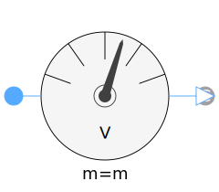
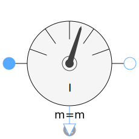
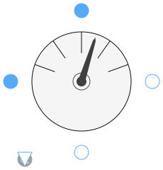

This package hosts sensors for quasi stationary multiphase circuits. Quasi stationary theory can be found in the references.
| Name | Description |
|---|---|
|
|
Frequency sensor |
|  PotentialSensor | Potential sensor |
| VoltageSensor | Voltage sensor |
|  CurrentSensor | Current Sensor |
|  PowerSensor | Power sensor |